Publishing Markup
When publishing your MATLAB® code files (.m), you can enhance the readability of the
published documents by adding markup to the comments within the files. Adding markup
allows you to format the published documents and display external files and
graphics.
Markup Overview
To insert markup, you can:
Use the formatting buttons and drop-down menus on the Publish tab to format the file. This method automatically inserts the text markup for you.
Select markup from the Insert Text Markup list in the right click menu.
Type the markup directly in the comments.
The following table provides a summary of the text markup options. Refer to this table if you are not using the MATLAB Editor, or if you do not want to use the Publish tab to apply the markup.
Note
When working with markup:
Spaces following the comment symbols (
%) often determine the format of the text that follows.Starting new markup often requires preceding blank comment lines, as shown in examples.
Markup only works in comments that immediately follow a section break.
| Result in Output | Example of Corresponding File Markup |
|---|---|
| Sections and Section Titles |
%% SECTION TITLE % DESCRIPTIVE TEXT %%% SECTION TITLE WITHOUT SECTION BREAK % DESCRIPTIVE TEXT |
| Text Formatting |
% _ITALIC TEXT_ % *BOLD TEXT* % |MONOSPACED TEXT| % Trademarks: % TEXT(TM) % TEXT(R) |
| Bulleted and Numbered Lists |
%% Bulleted List % % * BULLETED ITEM 1 % * BULLETED ITEM 2 % %% Numbered List % % # NUMBERED ITEM 1 % # NUMBERED ITEM 2 % |
| Text and Code Blocks |
%% % % PREFORMATTED % TEXT % %% MATLAB(R) Code % % for i = 1:10 % disp x % end % |
| External File Content |
% % <include>filename.m</include> % |
| External Graphics |
% % <<FILENAME.PNG>> % |
| Image Snapshot |
snapnow; |
| LaTeX Equations |
%% Inline Expression
% $x^2+e^{\pi i}$
%% Block Equation
%
% $$e^{\pi i} + 1 = 0$$
%
|
| Hyperlinks |
% <https://www.mathworks.com MathWorks> % <matlab:FUNCTION DISPLAYED_TEXT> |
| HTML Markup |
% % <html> % <table border=1><tr> % <td>one</td> % <td>two</td></tr></table> % </html> % |
| LaTeX Markup |
%% LaTeX Markup Example
% <latex>
% \begin{tabular}{|r|r|}
% \hline $n$&$n!$\\
% \hline 1&1\\ 2&2\\ 3&6\\
% \hline
% \end{tabular}
% </latex>
% |
Sections and Section Titles
Code sections allow you to organize, add comments, and execute portions of your
code. Code sections begin with double percent signs (%%) followed
by an optional section title. The section title displays as a top-level heading
(h1 in HTML), using a larger, bold font.
Note
You can add comments in the lines immediately following the title.
However, if you want an overall document title, you cannot add any
MATLAB code before the start of the next section (a line starting
with %%).
For instance, this code produces a polished result when published.
%% Vector Operations % You can perform a number of binary operations on vectors. %% A = 1:3; B = 4:6; %% Dot Product % A dot product of two vectors yields a scalar. % MATLAB has a simple command for dot products. s = dot(A,B); %% Cross Product % A cross product of two vectors yields a third % vector perpendicular to both original vectors. % Again, MATLAB has a simple command for cross products. v = cross(A,B);
By saving the code in an Editor and clicking the Publish button on the Publish tab, MATLAB produces the output as shown in this figure. Notice that MATLAB automatically inserts a Contents menu from the section titles in the MATLAB file.
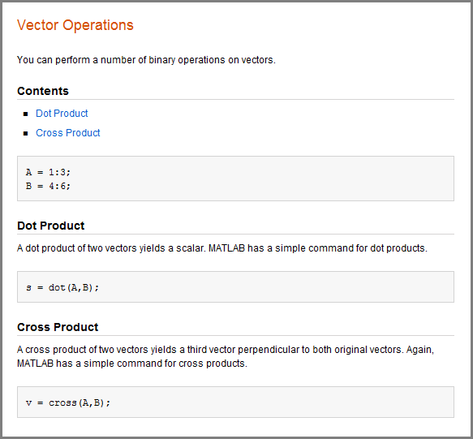
Text Formatting
You can mark selected text in the MATLAB comments so that they display in italic, bold, or monospaced text when
you publish the file. Simply surround the text with _,
*, or | for italic, bold, or monospaced
text, respectively.
For instance, these lines display each of the text formatting syntaxes if published.
%% Calculate and Plot Sine Wave % _Define_ the *range* for |x|
Trademark Symbols
If the comments in your MATLAB file include trademarked terms, you can include text to produce a
trademark symbol (™) or registered trademark symbol (®) in the output.
Simply add (R) or (TM) directly after the
term in question, without any space in between.
For example, suppose that you enter these lines in a file.
%% Basic Matrix Operations in MATLAB(R) % This is a demonstration of some aspects of MATLAB(R) % and the Symbolic Math Toolbox(TM).
If you publish the file to HTML, it appears in the HTML Viewer.
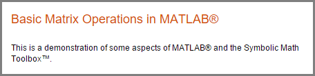
Bulleted and Numbered Lists
MATLAB allows bulleted and numbered lists in the comments. You can use this syntax to produce bulleted and numbered lists.
%% Two Lists % % * ITEM1 % * ITEM2 % % # ITEM1 % # ITEM2 %
Publishing the example code produces this output.
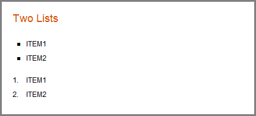
Text and Code Blocks
Preformatted Text
Preformatted text appears in monospace font, maintains white space, and does not wrap long lines. Two spaces must appear between the comment symbol and the text of the first line of the preformatted text.
Publishing this code produces a preformatted paragraph.
%% % Many people find monospaced text easier to read: % % A dot product of two vectors yields a scalar. % MATLAB has a simple command for dot products.
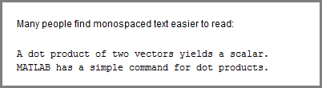
Syntax-Highlighted Sample Code
Executable code appears with syntax highlighting in published documents. You also can highlight sample code. Sample code is code that appears within comments.
To indicate sample code, you must put three spaces between the comment symbol and the start of the first line of code. For example, clicking the Code button on the Publish tab inserts the following sample code in your Editor.
%% % % for i = 1:10 % disp(x) % end %
Publishing this code to HTML produces output in the HTML Viewer.
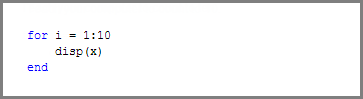
External File Content
To add external file content into MATLAB published code, use the <include> markup.
Specify the external file path relative to the location of the published file.
Included MATLAB code files publish as syntax-highlighted code. Any other files publish
as plain text.
For example, this code inserts the contents of sine_wave.m into
your published
output:
%% External File Content Example % This example includes the file contents of sine_wave.m into published % output. % % <include>sine_wave.m</include> % % The file content above is properly syntax highlighted.
Publish the file to HTML.
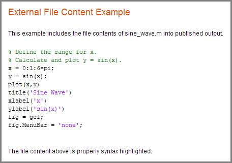
External Graphics
To publish an image that the MATLAB code does not generate, use text markup. By default, MATLAB already includes code-generated graphics.
This code inserts a generic image called FILENAME.PNG into your
published output.
%% % % <<FILENAME.PNG>> %
MATLAB requires that FILENAME.PNG be a relative path from
the output location to your external image or a fully qualified URL. Good practice
is to save your image in the same folder that MATLAB publishes its output. For example, MATLAB publishes HTML documents to a subfolder html. Save
your image file in the same subfolder. You can change the output folder by changing
the publish configuration settings. In MATLAB
Online™, save your image file to your Published
folder, which is located in your root folder.
External Graphics Example Using surf(peaks)
This example shows how to insert surfpeaks.jpg into a
MATLAB file for publishing.
To create the surfpeaks.jpg, run this code in the Command
Window.
saveas(surf(peaks),'surfpeaks.jpg');
To produce an HTML file containing surfpeaks.jpg from a
MATLAB file:
Create a subfolder called
htmlin your current folder.Create
surfpeaks.jpgby running this code in the Command Window.saveas(surf(peaks),'html/surfpeaks.jpg');
Publish this MATLAB code to HTML.
%% Image Example % This is a graphic: % % <<surfpeaks.jpg>> %

Valid Image Types for Output File Formats
The type of images you can include when you publish depends on the output type of that document as indicated in this table. For greatest compatibility, best practice is to use the default image format for each output type.
| Output File Format | Default Image Format | Types of Images You Can Include |
|---|---|---|
doc | png | Any format that your installed version of Microsoft® Office supports. |
html | png | All formats publish successfully. Ensure that the tools you use to view and process the output files can display the output format you specify. |
latex | png or epsc2 | All formats publish successfully. Ensure that the tools you use to view and process the output files can display the output format you specify. |
pdf | bmp |
|
ppt | png | Any format that your installed version of Microsoft Office supports. |
xml | png | All formats publish successfully. Ensure that the tools you use to view and process the output files can display the output format you specify. |
Image Snapshot
You can insert code that captures a snapshot of your MATLAB output. This is useful, for example, if you have a
for loop that modifies a figure that you want to capture
after each iteration.
The following code runs a for loop three times and produces
output after every iteration. The snapnow command captures all
three images produced by the code.
%% Scale magic Data and Display as Image
for i=1:3
imagesc(magic(i))
snapnow;
end
If you publish the file to HTML, it resembles the following output. By default, the images in the HTML are larger than shown in the figure. To resize images generated by MATLAB code, use the Max image width and Max image height fields in the Publish settings pane, as described in Output Settings for Publishing.
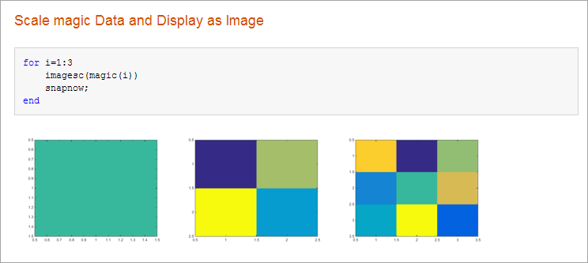
LaTeX Equations
Inline LaTeX Expression
MATLAB enables you to include an inline LaTeX expression in any code that
you intend to publish. To insert an inline expression, surround your LaTeX
markup with dollar sign characters ($). The
$ must immediately precede the first word of the inline
expression, and immediately follow the last word of the inline expression,
without any space in between.
Note
All publishing output types support LaTeX expressions, except Microsoft PowerPoint®.
MATLAB publishing supports standard LaTeX math mode directives. Text mode directives or directives that require additional packages are not supported.
This code contains a LaTeX expression:
%% LaTeX Inline Expression Example
%
% This is an expression: $x^2+e^{\pi i}$. It is
% inline with the text.If you publish the sample text markup to HTML, this is the resulting output.
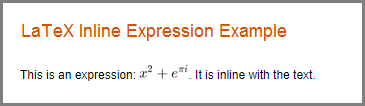
LaTeX Display Equation
MATLAB enables you to insert LaTeX symbols in blocks that are offset from
the main comment text. Two dollar sign characters ($$) on
each side of an equation denote a block LaTeX equation. Publishing equations in
separate blocks requires a blank line in between blocks.
This code is a sample text markup.
%% LaTeX Equation Example
%
% This is an equation:
%
% $$e^{\pi i} + 1 = 0$$
%
% It is not in line with the text.
If you publish to HTML, the equation appears as shown here.
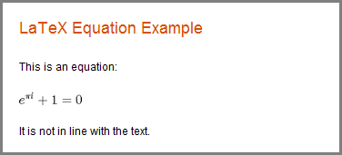
Hyperlinks
Static Hyperlinks
You can insert static hyperlinks within a MATLAB comment, and then publish the file to HTML, XML, or Microsoft Word. When specifying a static hyperlink to a web location, include a complete URL within the code. This is useful when you want to point the reader to a web location. You can display or hide the URL in the published text. Consider excluding the URL, when you are confident that readers are viewing your output online and can click the hyperlink.
Enclose URLs and any replacement text in angled brackets.
%% % For more information, see our web site: % <https://www.mathworks.com MathWorks>
Publishing the code to HTML produces this output.
Eliminating the text MathWorks after the URL produces this
modified output.
Note
If your code produces hyperlinked text in the MATLAB Command Window, the output shows the HTML code rather than the hyperlink.
Dynamic Hyperlinks
You can insert dynamic hyperlinks, which MATLAB evaluates at the time a reader clicks that link. Dynamic
hyperlinks enable you to point the reader to MATLAB code or documentation, or enable the reader to run code. You
implement these links using matlab: syntax. If the code that
follows the matlab: declaration has spaces in it, replace
them with %20.
Note
Dynamic links only work when viewing HTML in the HTML Viewer.
Diverse uses of dynamic links include:
Dynamic Link to Run Code. You can specify a dynamic hyperlink to run code when a user clicks the
hyperlink. For example, this matlab: syntax creates
hyperlinks in the output, which when clicked either enable or disable
recycling:
%% Recycling Setting
% Click the setting you want:
%
% <matlab:recycle('off') Disable recycling>
%
% <matlab:recycle('on') Enable recycling>The published result resembles this HTML output.
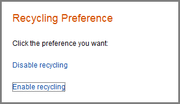
When you click one of the hyperlinks, MATLAB sets the recycle command
accordingly. After clicking a hyperlink, run recycle in
the Command Window to confirm that the setting is as you expect.
Dynamic Link to a File. You can specify a link to a file that you know is in the matlabroot of your reader.
You do not need to know where each reader installed MATLAB. For example, link to the function code for
publish.
%% % See the % <matlab:edit(fullfile(matlabroot,'toolbox','matlab','codetools','publish.m')) code> % for the publish function.
Next, publish the file to HTML.
When you click the code link, the MATLAB Editor opens and displays the code for the
publish function. On the reader's system,
MATLAB issues the command (although the command does not appear in
the reader's Command Window).
Dynamic Link to a MATLAB Function Reference Page. You can specify a link to a MATLAB function reference page using matlab:
syntax. For example, suppose that your reader has MATLAB installed and running. Provide a link to the
publish reference page.
%%
% See the help for the <matlab:doc('publish') publish> function.Publish the file to HTML.
When you click the publish hyperlink, the reference
page for the publish function opens in the system web
browser. On the reader's system, MATLAB issues the command, although the command does not appear in
the Command Window.
HTML Markup
You can insert HTML markup into your MATLAB file. You must type the HTML markup since no button on the Publish tab generates it.
Note
When you insert text markup for HTML code, the HTML code publishes only when the specified output file format is HTML.
This code includes HTML tagging.
%% HTML Markup Example % This is a table: % % <html> % <table border=1><tr><td>one</td><td>two</td></tr> % <tr><td>three</td><td>four</td></tr></table> % </html> %
If you publish the code to HTML, MATLAB creates a 2-row table with two columns. The table contains the values
one, two, three, and
four.
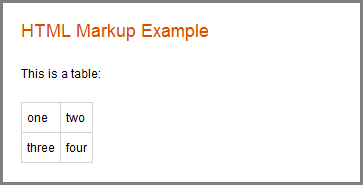
If a section produces command-window output that starts with
<html> and ends with </html>,
MATLAB includes the source HTML in the published output. For example,
MATLAB displays the disp command and makes a table from
the HTML code if you publish this code:
disp('<html><table><tr><td>1</td><td>2</td></tr></table></html>')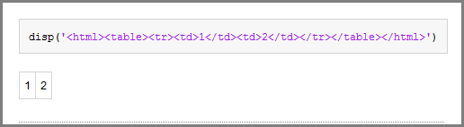
LaTeX Markup
You can insert LaTeX markup into your MATLAB file. You must type all LaTeX markup since no button on the Publish tab generates it.
Note
When you insert text markup for LaTeX code, that code publishes only when the specified output file format is LaTeX.
This code is an example of LaTeX markup.
%% LaTeX Markup Example
% This is a table:
%
% <latex>
% \begin{tabular}{|c|c|} \hline
% $n$ & $n!$ \\ \hline
% 1 & 1 \\
% 2 & 2 \\
% 3 & 6 \\ \hline
% \end{tabular}
% </latex>
If you publish the file to LaTeX, then the Editor opens a new
.tex file containing the LaTeX markup.
% This LaTeX was auto-generated from MATLAB code.
% To make changes, update the MATLAB code and republish this document.
\documentclass{article}
\usepackage{graphicx}
\usepackage{color}
\sloppy
\definecolor{lightgray}{gray}{0.5}
\setlength{\parindent}{0pt}
\begin{document}
\section*{LaTeX Markup Example}
\begin{par}
This is a table:
\end{par} \vspace{1em}
\begin{par}
\begin{tabular}{|c|c|} \hline
$n$ & $n!$ \\ \hline
1 & 1 \\
2 & 2 \\
3 & 6 \\ \hline
\end{tabular}
\end{par} \vspace{1em}
\end{document}MATLAB includes any additional markup necessary to compile this file with a LaTeX program.